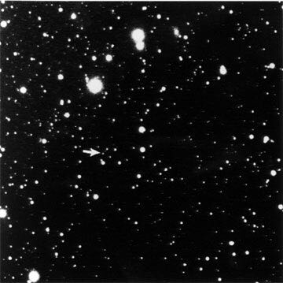
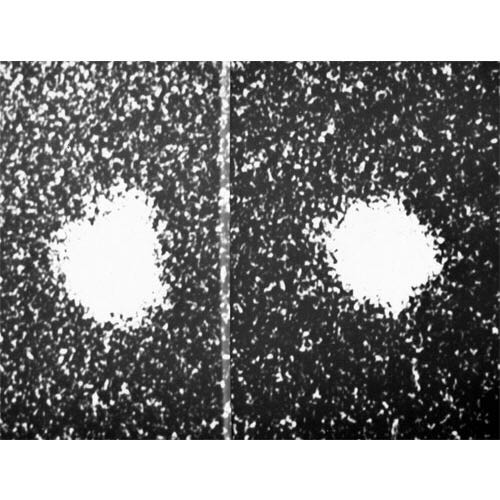
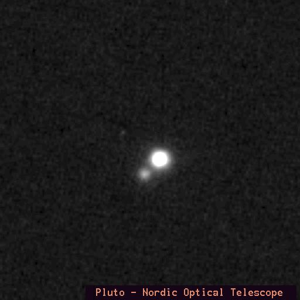
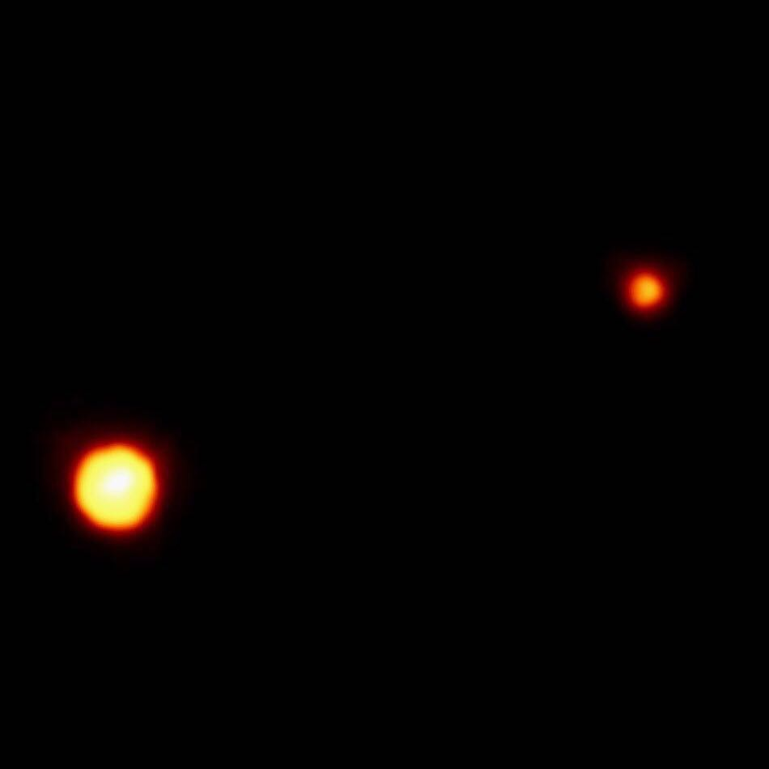
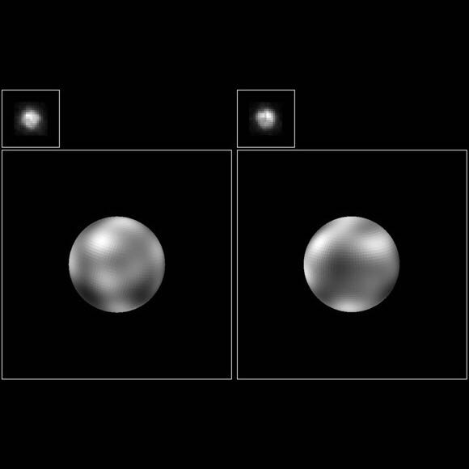
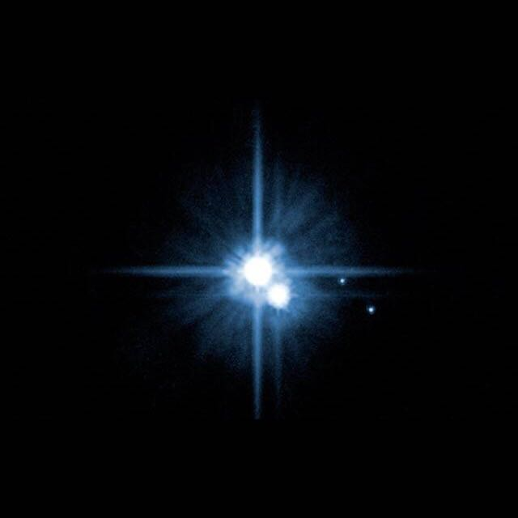
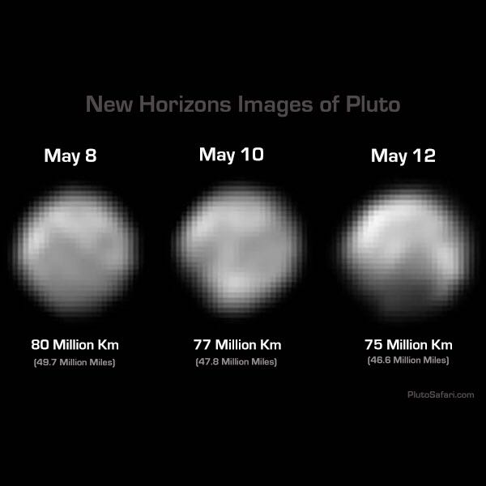
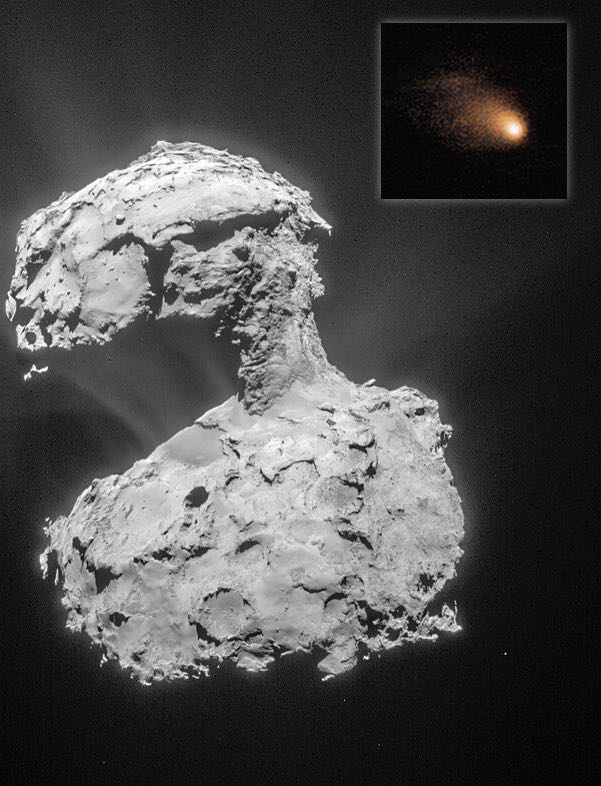

85 Years of Pluto: Out Evolving View
We’ve known about Pluto since 1930 but it’s so small and far away that we don’t know much. Space probes have studied every planet in the solar system but we’ve never had a probe to Pluto. The New Horizons mission has its closest Pluto encounter on July 14. It will dramatically expand our understanding. Here’s how our view of Pluto has evolved.
-

1930: The photograph from which Clyde Tombaugh discovered Pluto
Tombaugh found Pluto by comparing thousands of shots of little slices of the sky from different days to see if anything moved. The arrow here points to Pluto in the first confirmed image ever taken. Our view of Pluto was more or less the same—a tiny white dot—for the next 40 years.
-

1978: The discovery of Pluto's moon
This US Naval Observatory photo of Pluto was the first with enough detail to detect Pluto's large moon Charon, seen here as a bulge on the top edge of the disk in the left picture.
-

1988: The best ground-based view possible
This shot represents approximately the best image we're technically capable of getting from a state of the art ground-based telescope. If we want better we need to move to space.
-

1994: The Hubble Space Telescope captures Pluto's disk clearly
This false color image was the best picture of Pluto in existence when I started college. It shows the well-resolved disk of Pluto and a fuzzy Charon.
-

1996: The first hint of surface features, captured by Hubble
The images in the top-left corners are the actual shots. The larger images are heavily digitally processed to normalize shape and accentuate features. Until this month these were the clearest pictures of Pluto ever taken, and the first to show any surface features.
-

2005: Hubble reveals two additional moons orbiting Pluto.
Named Nix and Hydra, they are far smaller than Pluto's large moon Charon. To make them show up, the mighty Hubble had to overexpose the otherwise-dim Pluto which is why you see the "star" artifacts.
-

May 2015: New Horizons begins to improve our view
The New Horizons spacecraft was launched in 2006 on a high speed course to Pluto. It arrives in July but it's close now and we're starting to get pictures better than we can get from telescopes.
-

July 2015: ???
For comparison, here is a picture of the comet 67P taken by the orbiting spacecraft Rosetta during its encounter last year. The inset picture is the same comet photographed by a ground-based telescope. Pluto won't look anything like this but it shows how a space probe gives us a dramatically better view. Essentially every beautiful detailed picture of a planet you've ever seen was taken by a probe, not a telescope.